课表自动同步
登录教务系统后自动获取课表，周次、教室、教师信息一次同步。
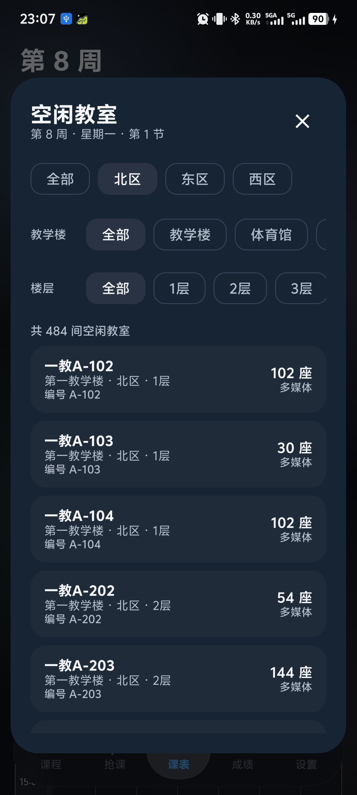
从看一眼课表，到查一间空教室，常用功能都为你准备好了。
登录教务系统后自动获取课表，周次、教室、教师信息一次同步。
提前提醒下一节课，不再因为赶路或忘记时间而迟到。
快速查看教学楼空闲教室，自习、讨论都有地方去。
成绩、考试安排集中查看，重要节点不再错过。
支持统一身份认证，密码登录与二次短信验证更安心。
通过本项目服务器获取新版本，修复与功能更新及时送达。
以下截图均来自真实设备。姓名、学号、密码与教师信息已隐藏。
按校区、教学楼、楼层筛选，座位数、教室类型和编号都清楚展示。支持北区、东区、西区。
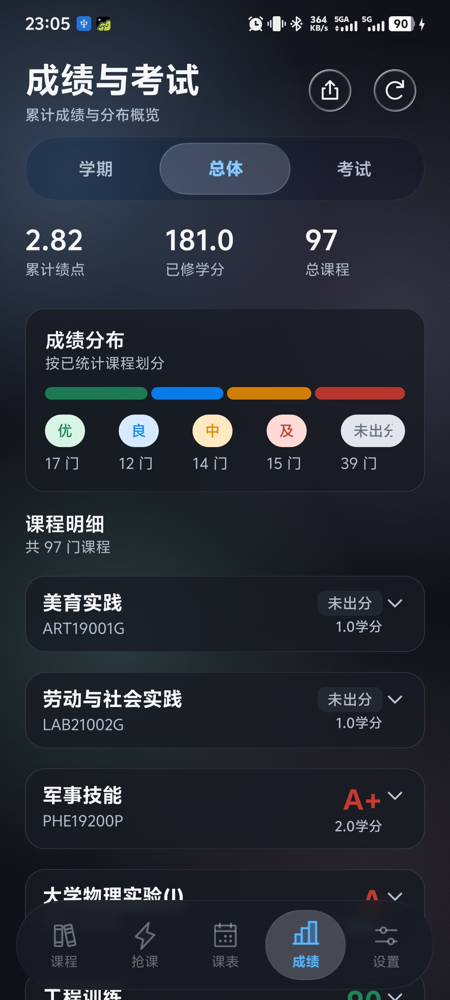
累计绩点、已修学分、课程明细和成绩构成集中展示。
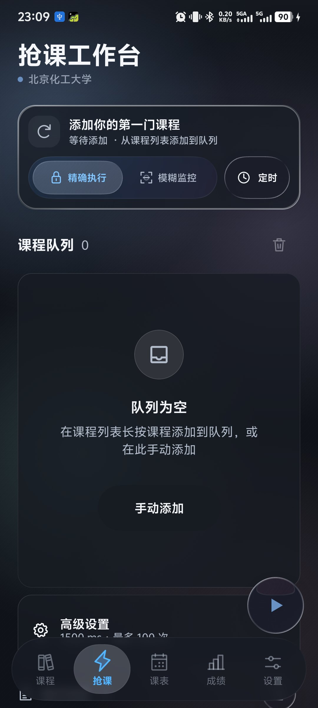
精确执行、模糊监控、定时开抢，课程队列统一管理。
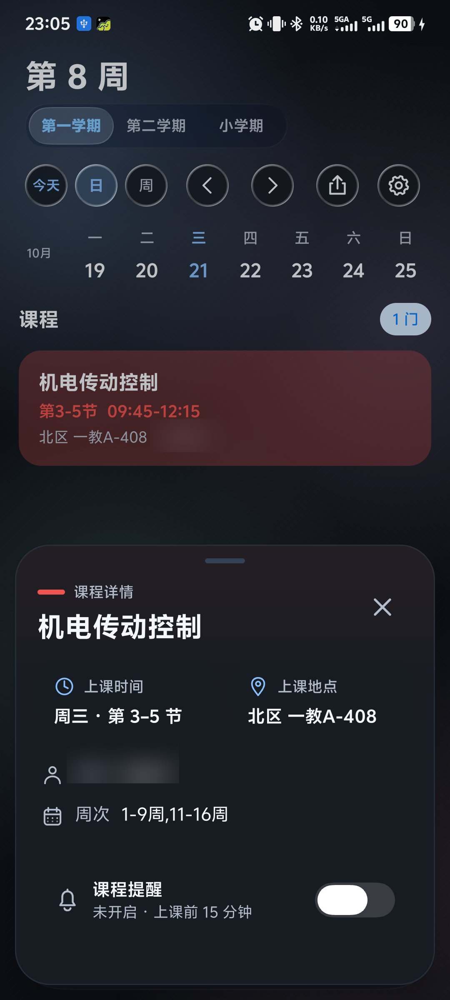
点开课程即可查看完整信息，并直接设置课前提醒。
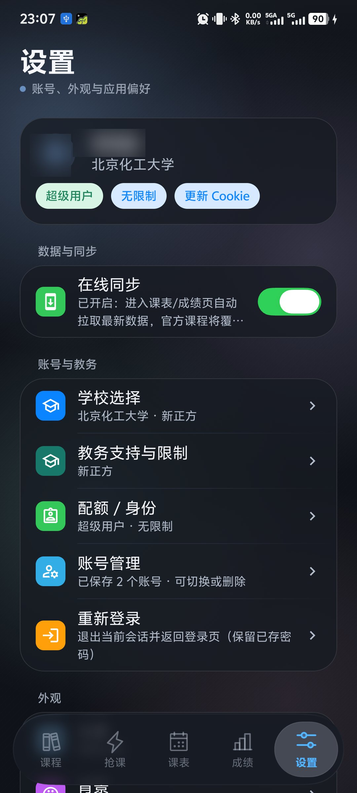
在线同步、主题、背景、液态玻璃和检查更新，都在一个页面。
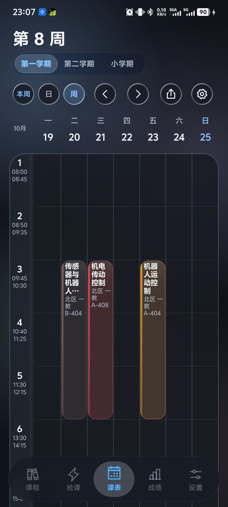
北化课表围绕真实校园场景设计，把重复操作收进一个 App，让你把时间留给更重要的事。
以下均为 App 真实运行截图，不是设计稿。
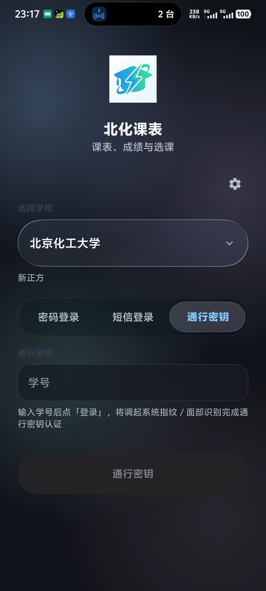
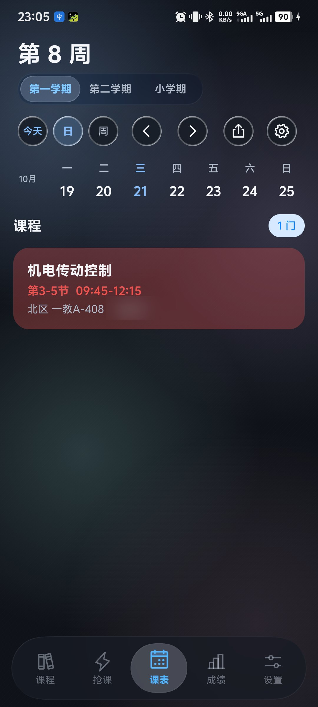
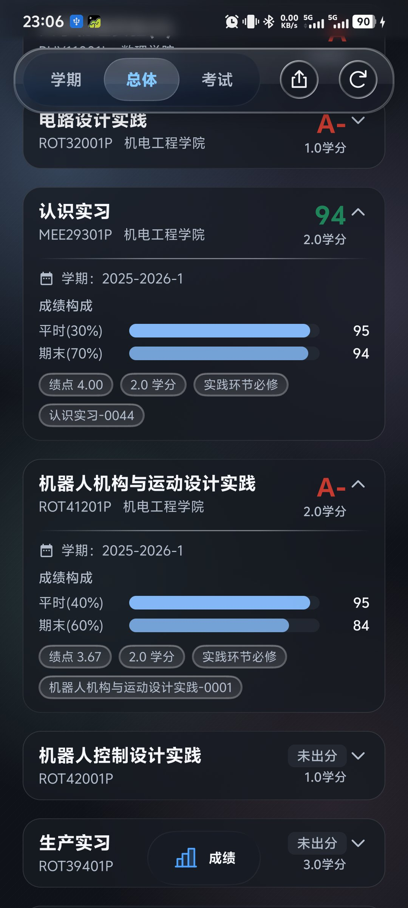
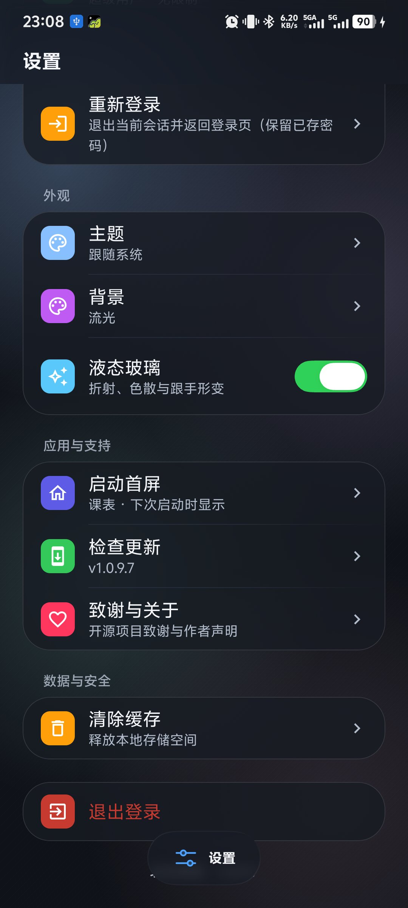
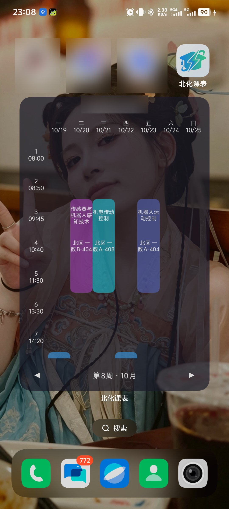
截图均为真实运行画面；仅对姓名、学号、密码和教师信息做了模糊处理。
com.buct.course当前版本通过项目自建更新服务器分发，安装后可在 App 内检查更新。